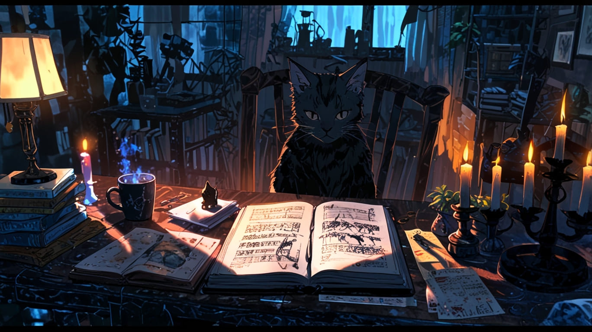
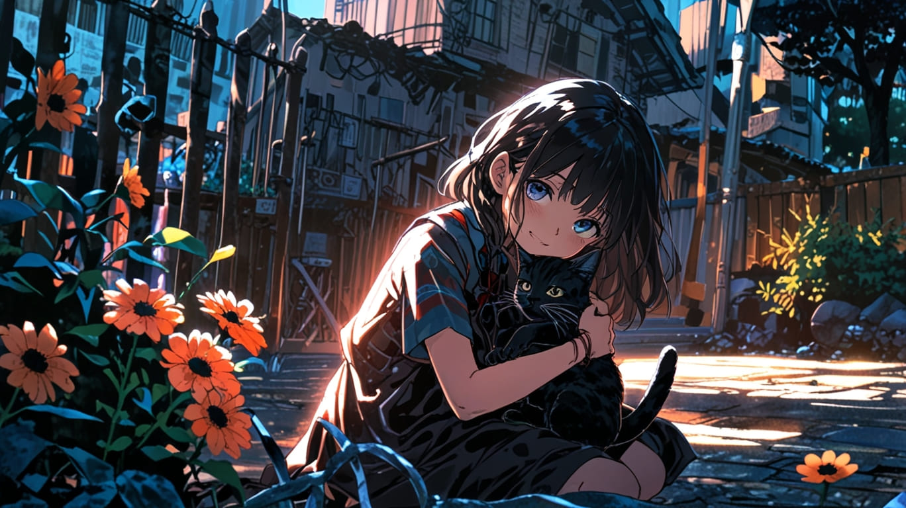
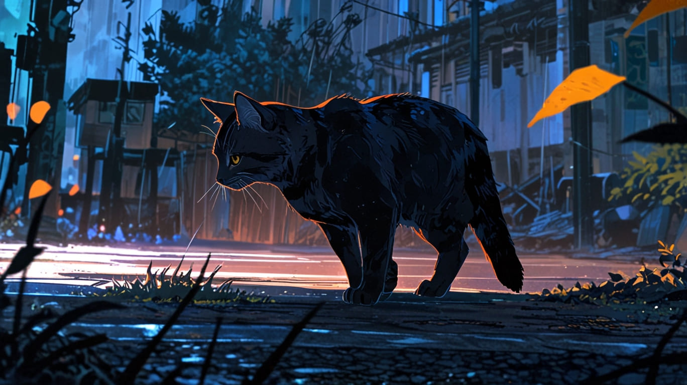
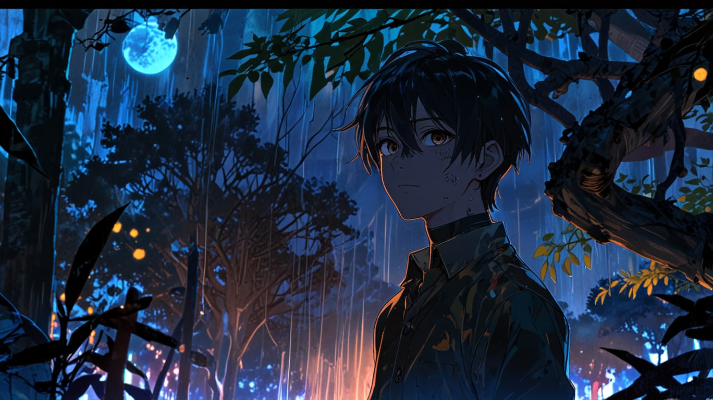
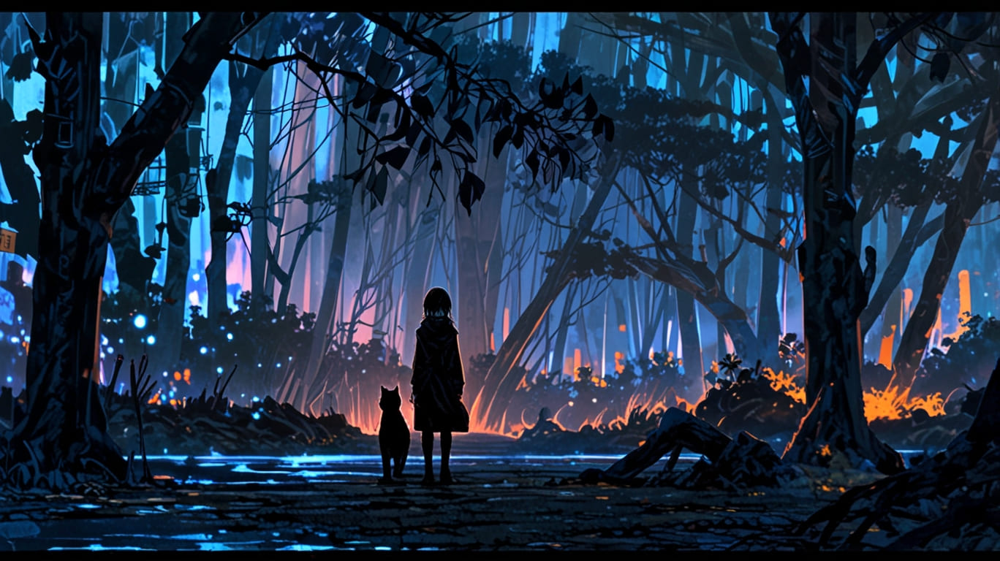

El Secreto de Dante
En un pequeño pueblo rodeado de colinas y bosques frondosos, vivía un gato negro llamado Dante. Para todos, era simplemente el astuto y elegante felino de la familia Montenegro, pero la verdad era mucho más oscura y antigua. Dante no siempre había sido un gato. Nueve años atrás, había sido un hombre: un brujo poderoso, temido por su conocimiento de las artes ocultas. Sin embargo, su arrogancia lo llevó a hacer un pacto con las fuerzas equivocadas. En un intento por escapar de sus perseguidores, lanzó un hechizo de transformación para convertirse en gato, convencido de que podría revertirlo en cualquier momento. Lo que no sabía era que el conjuro tenía un límite: si permanecía en forma animal durante nueve años, el hechizo sería irreversible.
Al principio, la vida como gato había sido un refugio inesperado. Vagando por las calles, Dante fue rescatado por Lucía, la hija menor de los Montenegro. Con el tiempo, la familia lo adoptó como uno más. Recibió caricias junto a la chimenea, dormía sobre los cojines más mullidos, y disfrutaba de los mimos diarios. Su naturaleza humana le permitía comprender sus conversaciones, apreciar sus risas y, con el tiempo, algo que jamás imaginó: los amó.
Sin embargo, en la mañana de su noveno aniversario como gato, Dante despertó con un frío que le recorrió la columna. No era el frío del clima, sino el escalofrío de la verdad que lo golpeaba: había olvidado el tiempo. Miró el calendario sobre la mesa del recibidor, y las fechas le perforaron la mente. Nueve años exactos desde su transformación. Intentó invocar las palabras del hechizo para revertirlo, pero ya era tarde. La magia lo había atrapado.
Durante todo ese día, Dante estuvo inquieto. No quiso acercarse a Lucía ni a los otros miembros de la familia. Su cola se agitaba con nerviosismo, y sus ojos ámbar reflejaban un pánico que nadie podía entender. Sabía que no podía quedarse. No tenía el valor de verlos a los ojos y vivir con la culpa. No podía soportar el peso del engaño, la idea de que todo el amor que le habían dado había sido un error, un engaño involuntario.
Al caer la noche, Dante salió por la ventana abierta de la cocina. Caminó por el sendero del jardín, con la luna llena iluminando su silueta. No miró hacia atrás, porque sabía que si lo hacía, no sería capaz de irse. Con cada paso, el frío de la soledad lo envolvía.
Justo cuando llegó al borde del bosque, dispuesto a perderse para siempre, sintió unos ojos clavados en él. Era Gabriel, el hijo mayor de la familia. El joven, que había bajado al jardín para tomar aire fresco, había visto a Dante salir. Pero lo que presenció después lo dejó sin aliento. Dante, creyendo que nadie lo observaba, dejó que su forma humana emergiera brevemente: su cuerpo delgado y pálido, con cabellos negros y ojos brillantes, resplandeció por un instante bajo la luz de la luna. Su antiguo yo. Sin embargo, no hubo ni una palabra, ni una súplica. Solo una mirada fugaz entre ellos dos.
Gabriel entendió. Y Dante también. El joven Montenegro, con el corazón oprimido, vio cómo su fiel amigo volvía a la forma de gato y corría hacia la oscuridad. Sabía que no debía hablar de lo que había visto. Aquella visión se convertiría en su secreto eterno, algo que nadie más sabría jamás.
Dante nunca regresó. Durante años, Lucía dejó un plato con comida en el jardín, con la esperanza de que su querido gato negro volviera. Pero solo el viento removía las hojas secas. Gabriel, en cambio, jamás habló del hombre que vio en el bosque aquella noche. Solo algunas veces, bajo la misma luna llena, creía ver la silueta de un gato negro observándolo desde la distancia. Sabía que era él.
Y aunque Dante nunca volvió a su hogar, siempre permaneció en el corazón de la familia Montenegro. Como su gato amado. Como su mayor secreto.